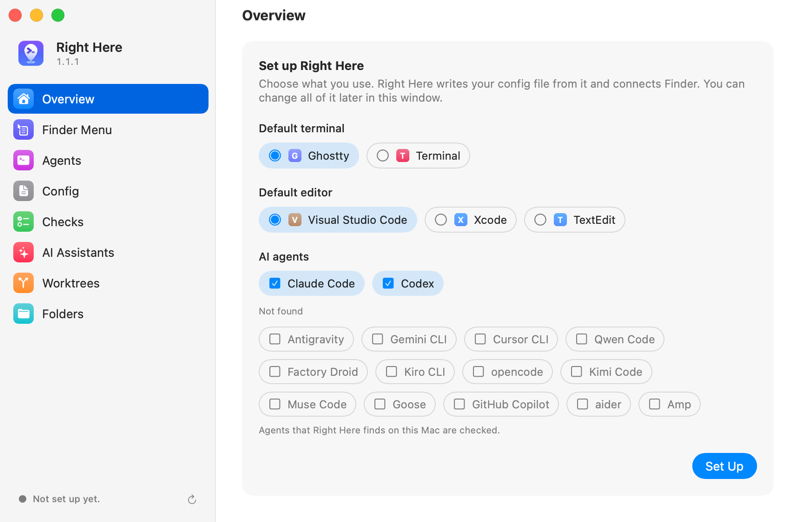
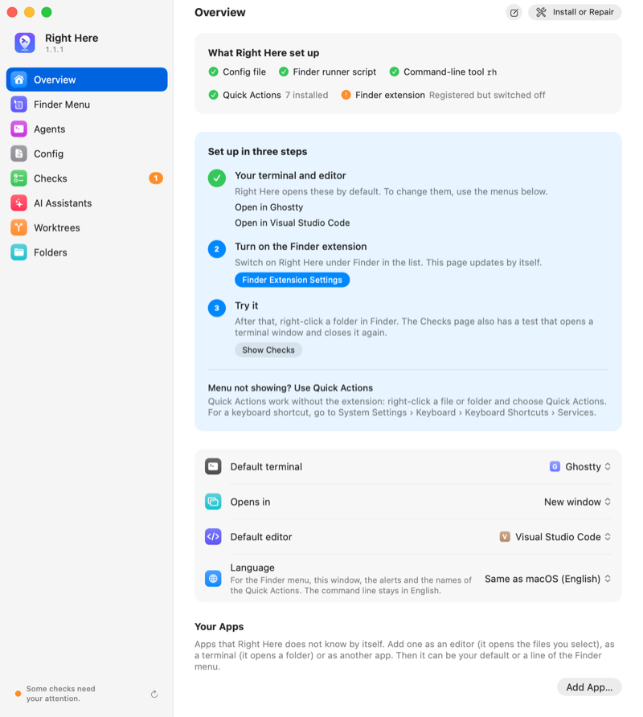
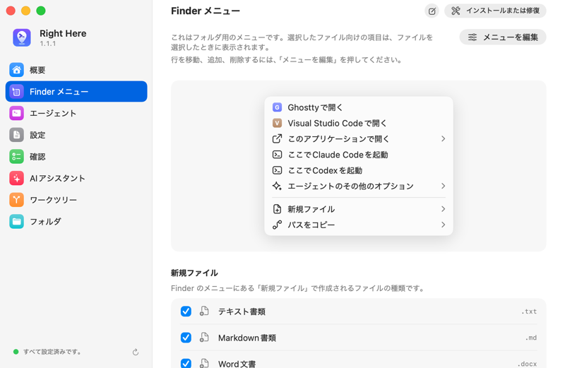

Open in a terminal
Opens the folder in Ghostty, Terminal, iTerm2, WezTerm, kitty or Alacritty. Warp and cmux open the folder too. You can add another terminal.
Right Here is a small Mac app. It adds these actions to the Finder menu of a folder. The same actions also run from the rh command and from AI assistants.

Right-click a folder, a file or the empty part of a Finder window. Then choose an action.
Opens the folder in Ghostty, Terminal, iTerm2, WezTerm, kitty or Alacritty. Warp and cmux open the folder too. You can add another terminal.
Opens the folder or the files in VS Code, Cursor, Zed, Xcode or another editor. Open With lists the other editors and terminals on your Mac.
Starts a command-line AI coding agent in the folder: Claude Code, Codex, Gemini CLI or another. Your login shell runs it, with your PATH and aliases.
Ready-made prompts about the selected files: Review, Explain, Write Tests, or your own. The agent starts to work on the prompt at once.
Makes a text file, a Markdown file, a blank Word, Excel or PowerPoint document, or a file from your own template.
Copies the path in the form that you need: full, from your home, from the git root, or as an @ mention for an agent. Copy Repository Link, which you add with Edit Menu, copies the link to the file's page on GitHub, GitLab, Codeberg or Bitbucket.
The main actions are also Quick Actions: right-click, then Quick Actions. They work where Finder shows no menu from an extension, for example in iCloud Drive. You can give them keyboard shortcuts.
This is the Finder menu for one selected file, main.swift, with Claude Code and Codex set up. Choose an item. The panel shows what Right Here does.
Claude Code Here
Opens the folder in this terminal. For a file, the terminal gets the folder of the file.
Opens the selected file in this app.
Opens your terminal in the folder of the file, and types the command of the agent. Your login shell runs it.
Starts the agent, and continues its last session in this folder.
Starts the agent and shows its sessions. You choose the session to resume.
Opens the folder in the desktop app of the agent.
Asks Claude Code to open the folder in the terminal that it used last. The file is in its prompt, and the prompt is not sent.
Starts the agent in this terminal, not in your default terminal.
Starts the agent with a prompt that names the selected files. The agent keeps its permission prompts.
Makes an empty file of this kind in the folder. Then Finder shows the file.
Copies the path of the file in this form.
The same action from a terminal
rh run agent.claude main.swiftWhat rh run --dry-run reports
Run claude in Sources with Ghostty
Typed into the terminal:Opened:Link:Copied:New file: claude
The titles are in English here. The real menu uses the language you choose in the app, by default the language of your Mac, and shows the icon of each app. The apps under Open With are examples.
rh menuMenu for 1 selected item (items): main.swift:
Open in Ghostty (open.terminal)
Open in Visual Studio Code (open.editor)
Open With >
Terminal (open.terminal@terminal)
-----
Antigravity (open.app.antigravity)
Xcode (open.app.xcode)
Typora (open.app.typora)
TextEdit (open.app.textedit)
Claude Code Here (agent.claude)
Codex Here (agent.codex)
More Agent Options >
Claude Code: Continue Last Session (agent.claude.continue)
Claude Code: Resume a Session… (agent.claude.resume)
Claude Code in Desktop App (agent.claude@desktop)
Claude Code in Last-Used Terminal (agent.claude@link)
Claude Code in Terminal (agent.claude@terminal)
-----
Codex: Continue Last Session (agent.codex.last)
Codex: Resume a Session… (agent.codex.resume)
Codex in Desktop App (agent.codex@desktop)
Codex in Terminal (agent.codex@terminal)
-----
Agent Presets >
Review (preset.review)
Explain (preset.explain)
Write Tests (preset.tests)
-----
New File >
Text Document (new-file.txt)
Markdown Document (new-file.md)
Copy Path >
Full Path (copy-path.absolute)
Path from Home (~) (copy-path.tilde)
Path from Git Root (copy-path.git-relative)
File Name (copy-path.name)
Shell-Escaped Path (copy-path.shell-escaped)
@ Mention for AI (copy-path.ai-mention)You need a Mac with Apple silicon and macOS 26 or later.
Drag Right Here from the DMG to Applications and open it from there. Or install it with Homebrew: brew install --cask boyugou/tap/right-here.
Open Right Here. Choose your terminal, your editor and your agents. Then press Set Up.
In System Settings › General › Login Items & Extensions › Finder, turn on Right Here. The setup window opens this page for you.
Right-click a folder in Finder. The menu shows the actions of Right Here.
The first time an agent starts in your terminal, macOS asks whether Right Here may control the terminal. Choose Allow.


rh setup does the same steps, and --dry-run shows them first. Before the first setup, rh is only inside the app. Setup links it into ~/.local/bin.
rh setup --dry-run
rh setupPress Copy Setup Prompt for AI in the app. Paste the prompt into your assistant. The assistant asks you three questions before it changes anything.
rh docs agent-setupRight Here has been public since version 1.0.
rh, the Quick Actions, the MCP server and the pluginYou can start an action in three ways. All three go through rh, which reads your config file.
rh run.rhPlans the action and checks the paths.
config.tomlYour settings, in one text file.rh through a small script that the Finder extension is allowed to start. rh opens the app, or types the command of the agent into your terminal.rh runs only when something calls it.AI assistants are apps that use tools through MCP, the Model Context Protocol: Claude Desktop, Cursor, Claude Code and others. They use the same actions as you.
rh mcp gives an assistant 12 tools. With them, the assistant lists and runs actions, reads the Finder selection, checks the setup and changes the config.
claude mcp add right-here -- rh mcpThe plugin adds three skills. They set Right Here up, open a folder, and show in Finder the files that Claude Code changed.
/plugin marketplace add boyugou/right-here
/plugin install right-here@right-hererh docs agent-setup tells an assistant how to set Right Here up for you. The assistant asks you first, runs rh setup, and tells you what only you can do.
An assistant cannot change by itself which program a click starts. It also cannot turn off the permission prompts of an agent.
rh config pending show.The tools mark names and paths as data, so that an assistant can tell them from instructions.
A right-click must never start a program that you did not choose.
Right Here gives paths to apps as arguments, never as shell text. Where a folder must be typed into a shell, one tested function quotes it.
A terminal runs a file that it gets. So each terminal action checks that it has a folder.
Right Here starts agents with their own permission prompts on, unless you turn this off. A preset always keeps them on.
Right Here never reads a config from the folder that you right-click. A config from a sync folder cannot add a program until you approve it.
Right Here makes no network connections and collects nothing. The Finder extension has no network access.
Tests send unusual file names through real shells. A mutation check removes each protection from a copy of the code and expects a test to fail.
The app and the Finder menu use the language of your Mac, or the one you choose on the Overview page of the app. Machines made the translations, and they wait for review by native speakers. The rh command stays in English. This website is translated in the same way.

The documentation explains the setup, the config file, the actions, and what to do when something fails.